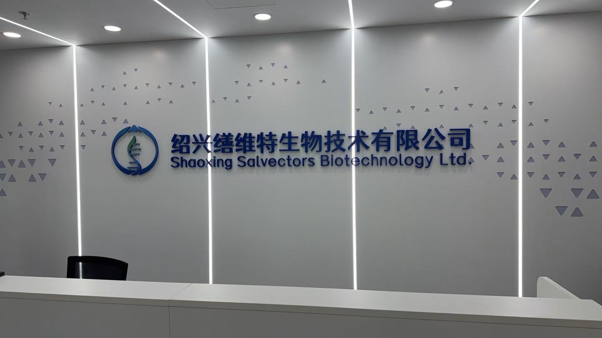
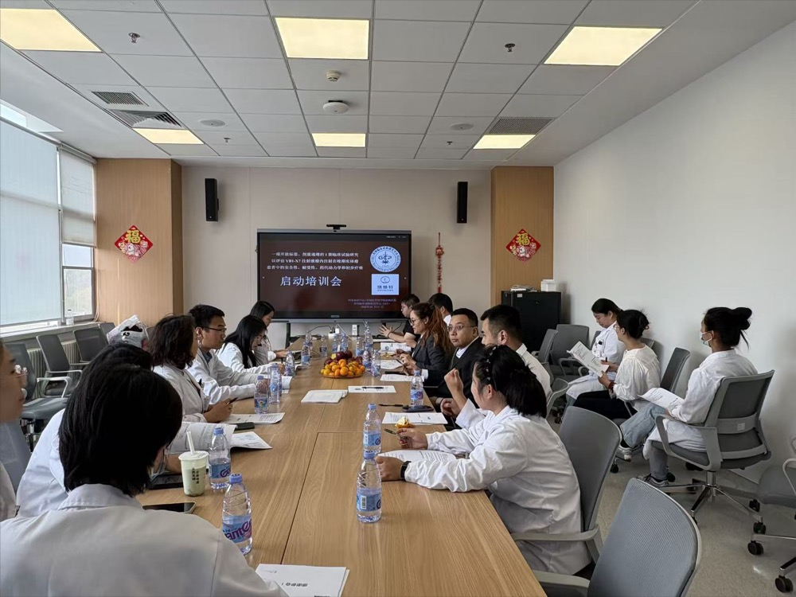

国内 I 期临床试验完成首例受试者给药
继 2026 年 10 月启动培训会之后，研究中心完成首例受试者的筛选与入组，并按方案完成首次给药。研究进入临床实施阶段，后续将按方案继续推进受试者入组。
绍兴缮维特生物技术有限公司（原上海缮维特生物技术有限公司）创立于 2021 年 10 月，是一家致力于可编程智能生命体药物研发的科技创新型企业。
公司拥有以工程化菌株构建的智能生命体药物递送技术平台，并围绕 YB1 系列技术构建了核心专利布局。2025 年 8 月，公司落地绍兴柯桥。


在减毒改造的基础上引入乏氧增殖调控系统，使细菌在肿瘤内部的低氧区域增殖。
在正常器官的有氧环境中，菌株被迅速裂解清除。
该智能生命体可携带蛋白、抗体及核酸类药物，具备拓展为多种产品的潜力。

示意图：YB1-X7 的作用机理，为 ESMO 2026 电子壁报所用版本。YB1-X7 注射液为在研药品，安全性与有效性正在临床研究中评估。
YB1-X7 注射液是缮维特自主研发的可编程智能生命体药物，以基因改造的减毒沙门氏菌构建：菌株自主感知肿瘤内的氧浓度，并据此决定增殖或裂解。
| 产品 | 给药途径 | 适应症 | 研发进展 |
|---|---|---|---|
| YB1-X7 注射液 | 瘤内注射 | 晚期实体瘤 | 临床前临床许可I 期II 期III 期 国内 I 期临床研究进行中 |
| YB1-X7 注射液 | 静脉输注 | 晚期实体瘤 | 临床前临床许可I 期II 期III 期 已获中国、美国临床试验许可 |
YB1-X7 注射液为在研药品，尚未在中国及其他任何国家或地区获批上市，其安全性和有效性尚未确立。
缮维特 AI 智能体团队是一支「人 + AI 智能体」的团队：成员定方向、做决策，研究、工程、情报、审查等多个 AI 智能体分工协作、互相校验，驱动从数据分析、方案设计到结果复核的科研流程，并构建统计建模框架。
多个 AI 智能体在人的指导下分工协作、互相校验，过程严谨、可复现。
由美国 Arc 研究所主办。团队完全基于公开数据参赛，初赛一度位列全球第 3；决赛在 806 支队伍中排名第 84，跻身前 11%。
我们希望把这套科研模式推进到沙门氏菌研究，构建能够预测沙门氏菌在不同条件下基因表达与行为的「虚拟沙门氏菌」，为溶瘤细菌的设计与优化提供计算支撑。
继 2026 年 10 月启动培训会之后，研究中心完成首例受试者的筛选与入组，并按方案完成首次给药。研究进入临床实施阶段，后续将按方案继续推进受试者入组。
2026 年 10 月 23 日至 27 日，欧洲肿瘤内科学会年会（ESMO Congress 2026）在西班牙马德里举行。由中国医学科学院肿瘤医院开展、缮维特提供研究药物并资助的一项研究者发起的临床研究成果获大会收录，以电子壁报形式进行学术交流（编号 1131eP）。该研究与国内 I 期注册临床为两项独立研究。

启动培训会在国家癌症中心/中国医学科学院肿瘤医院药物临床试验研究中心召开，研究由李宁教授担任主要研究者，缮维特为申办方。研究面向晚期实体瘤患者，为多中心研究。